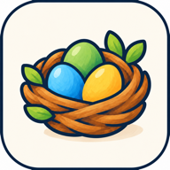

ГніздечкоПолітика конфіденційності
Застосунок «Мова» (абетка з Ластівкою Лесею). Чинна з 20 жовтня 2026 року.
Хто ми
«Гніздечко» — сімейство освітніх застосунків українською мовою для дітей 3–8 років. Цей документ стосується застосунку «Мова» для iOS та Android. З питань конфіденційності пишіть на gnizdechko.dev@gmail.com.
Що зберігається на пристрої
Щоб навчання продовжувалося з того самого місця, застосунок зберігає на пристрої:
- профіль дитини: ім’я (можна вказати будь-яке прізвисько), вік, хлопчик чи дівчинка (щоб Леся правильно зверталася), обрану аватарку;
- прогрес навчання: пройдені листи, марки, зернятка, предмети в гніздечку;
- налаштування та час у застосунку (для ліміту часу, якщо батьки його ввімкнули).
Ці дані не надсилаються нам чи будь-кому іншому. Вони видаляються, коли ви видаляєте профіль дитини в кабінеті для дорослих або видаляєте застосунок.
Мікрофон і записи голосу
У вправі «Скажи сам» дитина може записати, як вимовляє звук, і послухати себе. Запис робиться лише після натискання кнопки і нікуди не передається. За замовчуванням записи не зберігаються. Якщо дорослий увімкне «Записи голосу» в налаштуваннях, застосунок зберігає до 20 записів на профіль лише на цьому пристрої, поза резервними копіями. Записи видаляються, коли налаштування вимикають або видаляють профіль.
Інтернет
Застосунок працює без інтернету і не надсилає персональних даних. Завантаження та оновлення відбуваються через App Store або Google Play за їхніми правилами.
Покупки
Зараз у застосунку немає платних функцій. Пізніше з’явиться підписка, доступна лише дорослим за батьківським замком. Оплату обробляє App Store або Google Play; ми не отримуємо даних вашої картки. Перед появою підписки ми оновимо цю політику.
Діти
Застосунок створено для дітей, з урахуванням вимог щодо захисту дитячих даних (зокрема COPPA та GDPR). Налаштування, кабінет для дорослих і будь-які покупки закриті батьківським замком. У дитячій частині немає реклами, чатів і посилань на сторонні сайти.
Ваші права
Оскільки дані зберігаються лише на вашому пристрої, ви повністю контролюєте їх: можете змінити чи видалити профіль у кабінеті для дорослих або видалити застосунок разом з усіма даними. Якщо маєте питання, напишіть нам — відповімо.
Зміни політики
Якщо ми змінимо, як застосунок працює з даними (наприклад, додамо обліковий запис батьків і синхронізацію між пристроями), ми оновимо цю сторінку і дату вгорі, а про суттєві зміни повідомимо в застосунку заздалегідь.
Privacy policy
The Mova app (Ukrainian alphabet with Lesya the swallow). Effective 20 October 2026.
Who we are
Gnizdechko is a family of Ukrainian-language educational apps for children aged 3–8. This policy covers the Mova app for iOS and Android. For privacy questions, write to gnizdechko.dev@gmail.com.
What is stored on the device
So that learning continues where the child left off, the app stores on the device:
- the child’s profile: a name (any nickname is fine), age, boy or girl (so Lesya addresses the child correctly), and the chosen avatar;
- learning progress: completed letters, stamps, seeds, items in the nest;
- settings and time spent in the app (for the time limit, if a parent turns it on).
This data is not sent to us or to anyone else. It is deleted when you delete the child’s profile in the parent area or uninstall the app.
Microphone and voice recordings
In the “Say it yourself” exercise, the child can record how they pronounce a sound and listen back. Recording starts only after a tap and is never transmitted. By default recordings are not kept. If a parent turns on “Voice recordings” in settings, the app keeps up to 20 recordings per profile on this device only, excluded from backups. They are deleted when the setting is turned off or the profile is deleted.
Internet
The app works offline and does not send personal data. Downloads and updates go through the App Store or Google Play under their own terms.
Purchases
The app currently has no paid features. A subscription will be added later, available only to adults behind the parental gate. Payments are processed by the App Store or Google Play; we never receive your card details. We will update this policy before the subscription is introduced.
Children
The app is designed for children with children’s data protection requirements in mind (including COPPA and GDPR). Settings, the parent area and any purchases are behind a parental gate. The children’s area has no ads, no chats and no links to external websites.
Your rights
Because the data stays on your device, you are fully in control: you can edit or delete a profile in the parent area or uninstall the app together with all its data. If you have questions, write to us and we will answer.
Changes
If we change how the app handles data (for example, by adding a parent account and syncing between devices), we will update this page and the date above, and announce material changes in the app in advance.